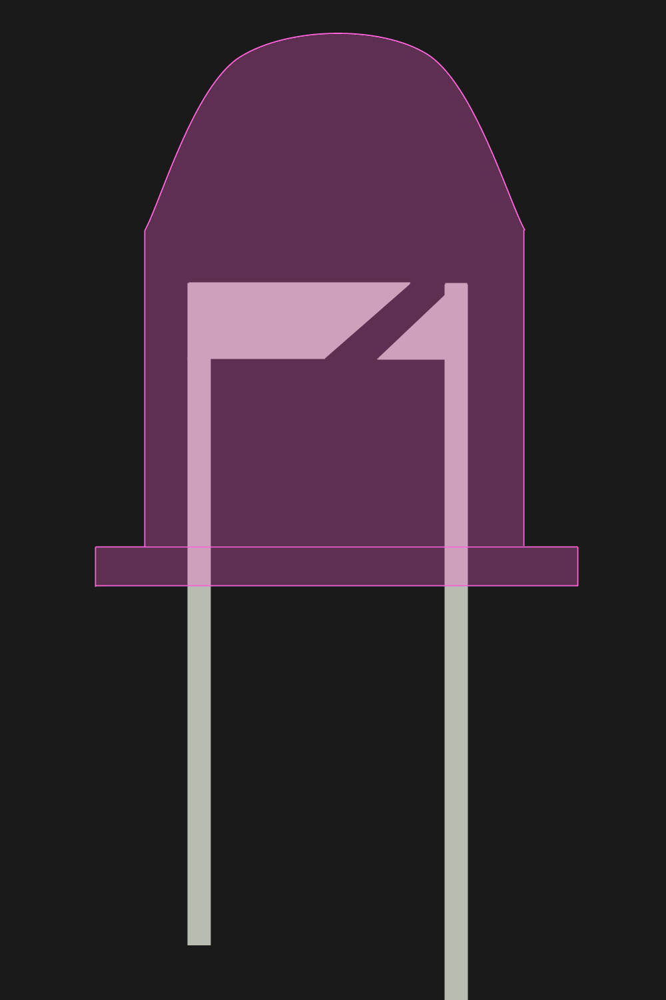

So you want to start an LED project. Maybe you are
doing some thing simple and only need a couple of shiny lights to indicate that a
system is on or off. Perhaps you are being a bit more daring and making an LED
matrix or even an LED cube. No matter what you are making, choosing the correct
LEDs is important. Well, I supposed it's not as important as actually important
things such as correct supply design but hey, we all have something to nit pick
about.
How Does An LED Work?
Before we go looking at the immense stock of diodes
available on Mouser or similar sites, it would be beneficial to first look at what
an LED really is, what it's made of, how it functions, and what it requires of us
as circuit designers in order to function correctly. Excited? I know I am!

Above is my janky representation of a standard
through-hole LED. It's the kind of LED most people are familiar with, showing up
in all kinds of projects on the web or sold on Maker-centered websites such as Sparkfun
or Adafruit. Most of the LED's structure is made of of the plastic / epoxy cap seen
here in a wonderful purplish hue and the wires that conduct electricity seen in gray.

Above is my janky representation of a standard through-hole LED. It's the kind of LED most people are familiar with, showing up in all kinds of projects on the web or sold on Maker-centered websites such as Sparkfun or Adafruit. Most of the LED's structure is made of of the plastic / epoxy cap seen here in a wonderful purplish hue and the wires that conduct electricity seen in gray.